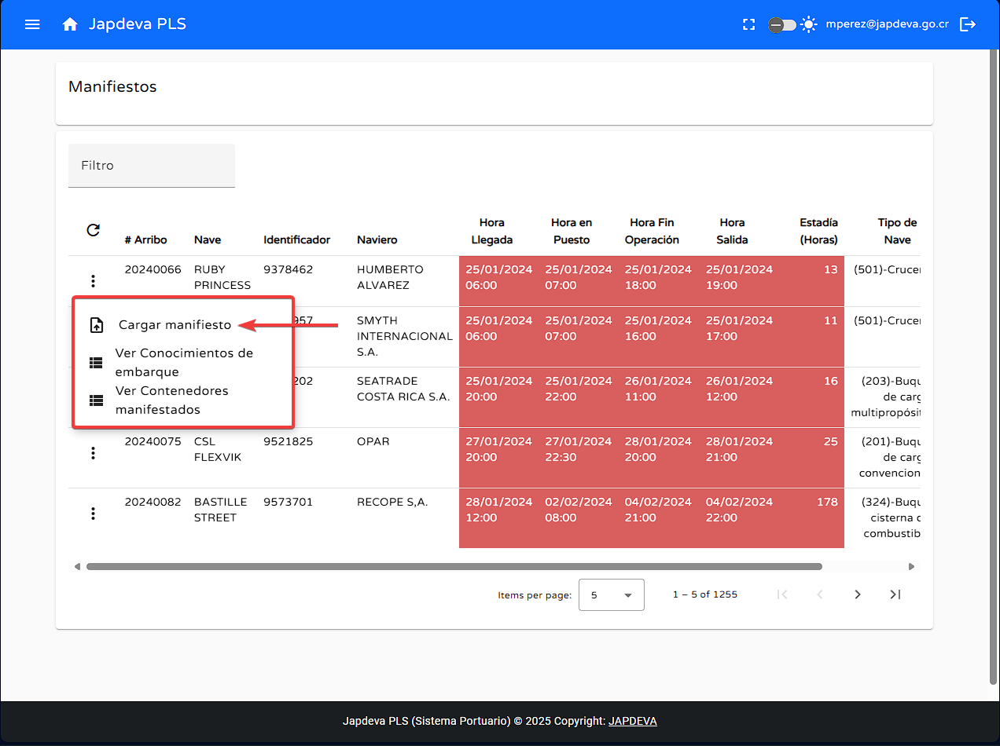

2. Funciones principales
1
Función de búsqueda por filtro
Para realizar la búsqueda mediante filtro se debe hacer lo siguiente:
- Posicionamos el cursor sobre el espacio en blanco que se encuentra en la parte superior izquierda de la tabla que muestra la leyenda Filtro.
- Ingresamos los criterios de búsqueda que se deseen realizar.
- Sí existe relación entre los criterios de búsqueda y la información almacenada en el sistema se mostrará de manera automática en la tabla. Como se muestra anteriormente.
2
Función refrescar información
Para lograr la función de refresco de manera exitosa se debe de hacer lo siguiente:
- Ubicar el cursor sobre el botón de refrescar y presionar sobre él.
- Al momento de dar clic sobre el botón de refrescar si existe información nueva que previamente no fue mostrada se mostrará de manera automática en la tabla presente.
3
Función carga de manifiestos
Para realizar la carga de manifiestos al sistema se debe de hacer lo siguiente:
- Ubicar el cursor sobre el botón de Opciones que se encuentra al lado izquierdo de todas las filas existentes en la tabla reflejada.
- Una vez posicionado el cursor sobre Opciones le damos clic para acceder a las diversas opciones existentes en el mismo.
- La importante para este momento es la opción Cargar manifiesto. 
- Damos clic en la opción anterior y se abrirá la siguiente ventana emergente.
- Dentro de la ventana se nos mostrarán tres campos distintos a rellenar los cuales son Modalidad, Muelle y ETA.
- Con lo anterior claro podemos comenzar con con inserción de los datos necesarios.
- Modalidad: Se debe seleccionar si la modalidad relacionada al manifiesto a cargar es Importación o Exportación como tal.
- Muelle: Seleccionar en que recinto se encuentrra ubicado el muelle donde se realizarán las operaciones.
- ETA: Ingresar el tiempo estimado de arribo con fecha y hora exacta.
- Una vez completado todos los datos necesarios para inserción de un nuevo manifiesto se procede hacer clic en el botón Guardar
- En caso contrario y si se desea abortar la operación se puede realizar dando clic en el botón Cancelar

Advertencia: Todos los datos anteriores para el registro de un nuevo manifiesto son de
índole obligatoria.
3
Función conocimiento de embarcaciones
Para realizar un conocimiento de embarcaciones correcta se debe de realizar lo siguiente:
- Ubicamos el cursor sobre la segunda opción del botón Opciones y damos clic en ella.
- Al dar cli en la opción de Ver Conocimientos de Embarque se desplegará la siguiente pantalla.
- En la pantalla anterior aparte de poder ver una tabla propia insertada en la misma se pueden observar 3 acciones claras: Modalidad, Filtro y Refrescar.
- Modalidad: Permite que el usuario seleccione si desea ver información solo de Importación o Exportación.
- Filtro: Similar las funciones de filtrado del sistema, permite al usuario ingresar criterios de búsqueda para visualizar información relacionada a los mismos siempre y cuando estos existan en el registro.
- Refrescar: Permite al usuario refrescar la información en tiempo real al momento de dar clic sobre el.
- Como último punto dentro de esta ventana de conocimiento se explicarán cada uno de los diversos campos que componen la tabla presente en pantalla. (De izquierda a derecha).
- Conocimiento número aduana:
- Número:
- Tipo de conocimiento:
- Consignatario razón social:
- Puerto descarga:
- Puerto embarque:
- Estado:
- Fecha oficialización: PREGUNTAR LOS CAMPOS

4
Función conocimiento de contenedores
Para lograr de manera correcta está función se debe de realizar los siguientes pasos:
- Ubicamos el cursor sobre la última opción del botó de Opciones y damos clic en ella.
- Dentro de está opción se mostrará una pantalla muy similar a la del punto anterior (Ver conocimientos de embarque. Además contiene las mismas acciones solamente que relacionadas a contenedores. Modalidad, Filtro y Refrescar.
- Modalidad: Permite que el usuario seleccione si desea ver información solo de Importación o Exportación.
- Filtro: Similar las funciones de filtrado del sistema, permite al usuario ingresar criterios de búsqueda para visualizar información relacionada a los mismos siempre y cuando estos existan en el registro.
- Refrescar: Permite al usuario refrescar la información en tiempo real al momento de dar clic sobre el.
- Como último punto dentro de esta ventana de contenedores se explicarán cada uno de los diversos campos que componen la tabla presente en pantalla. (De izquierda a derecha).
- Número contenedor:
- Número de viaje:
- Calificador:
- Tamaño:
- Peso:
- Lleno/vacío:
- Depósito de destino:
- Estado:
- Fecha ingreso:
- Fecha salida:
- Precinto 1: PREGUNTAR LOS CAMPOS
5
Visualización de información en pantalla Manifiestos
Para brindar una explicación sencilla y directa de los diversos campos que ofrece la tabla presente en pantalla se explicarán de forma resumida cada uno de ellos. (De izquierda a derecha).
- # arribo: Número de arribo brindado por la empresa con el cual se puede manejar todo lo relacionado con el navio.
- Nave: Nombre de la embarcación y cómo se encuentra registrada en el sistema.
- Identificador: Número de identificación con el cual la embarcación se encuentra registrado ante los entes internacionales como por ejemplo el IMO.
- Naviero: Persona o empresa encargada de los barcos.
- Hora llegada: El Estimated Time of Arrival se refiere a la hora estimada de llegada del barco a la bahía.
- Hora en puesto: El Estimated Time of Boarding se relaciona a la hora estimada de ubicación del barco en el puesto de carga.
- Hora fin operación: El Estimated Time of Completion se refiere a la hora estimada que debe terminar la operación del barco en el puesto de carga.
- Hora salida: Por último, en relación a los tiempos de operación se encuentra el Estimated Time of Disembarkment que hace referencia a la hora estimaada de salida de puerto de la embarcación.
- Estadía: Tiempo total que se encontrará el navío en el puerto de carga, se debe reflejar en horas.
- Tipo de nave: Este apartado toma en cuenta el tipo de nave registrado en el sistema y las categorías de COCATRAM para confeccionar está información.
- Estado progreso: Referente al estado de progreso del barco en el sistema.